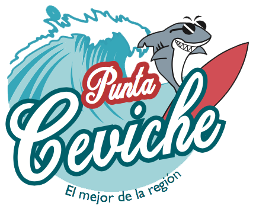
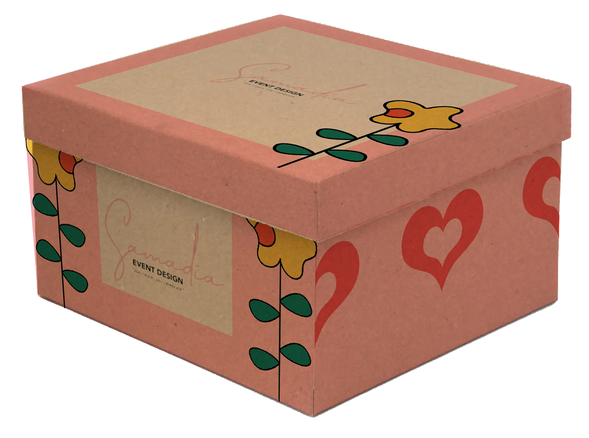
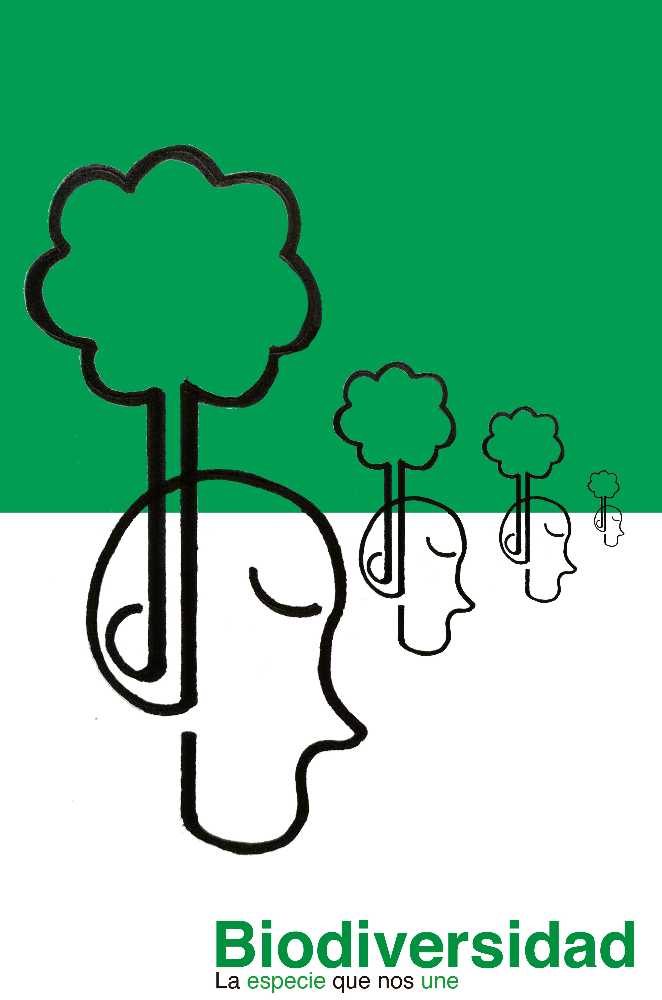
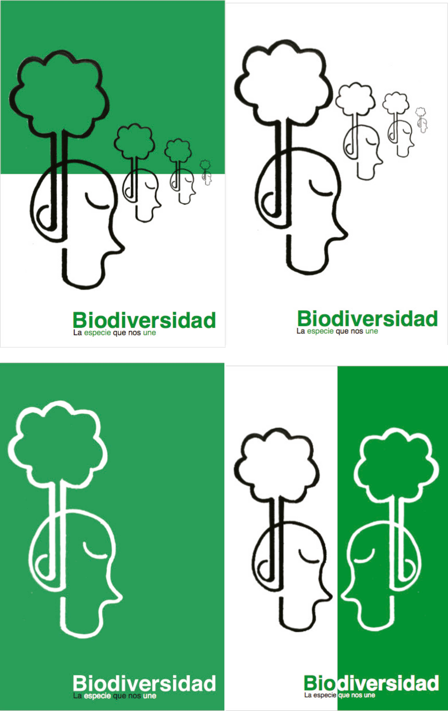
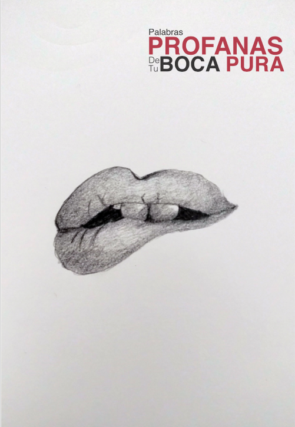
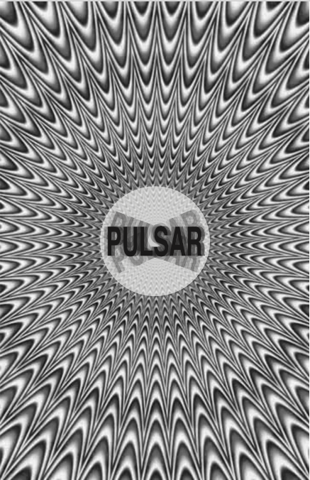
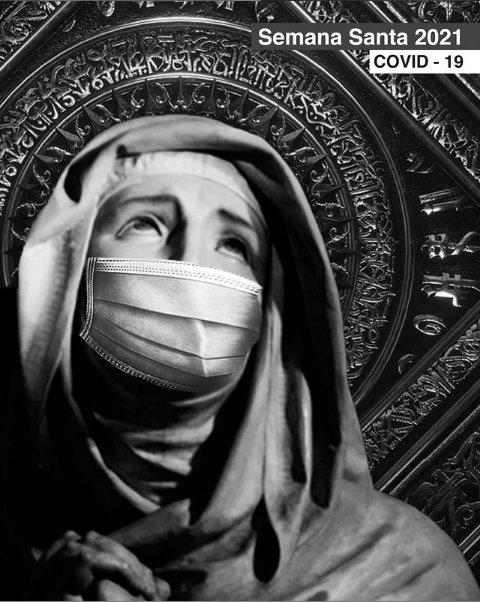
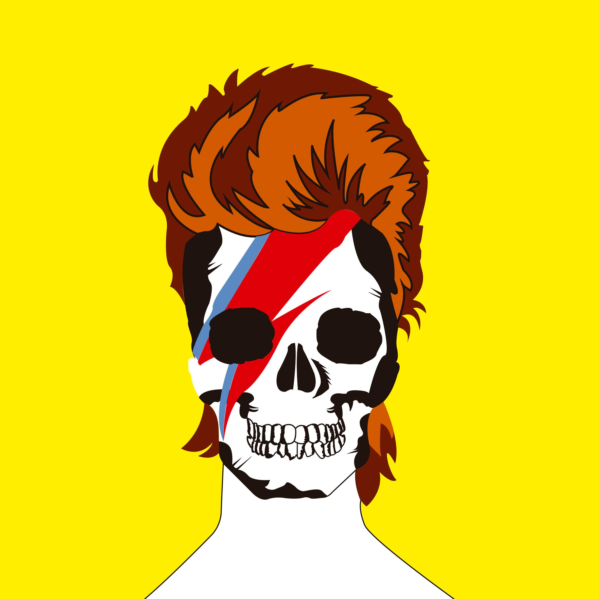
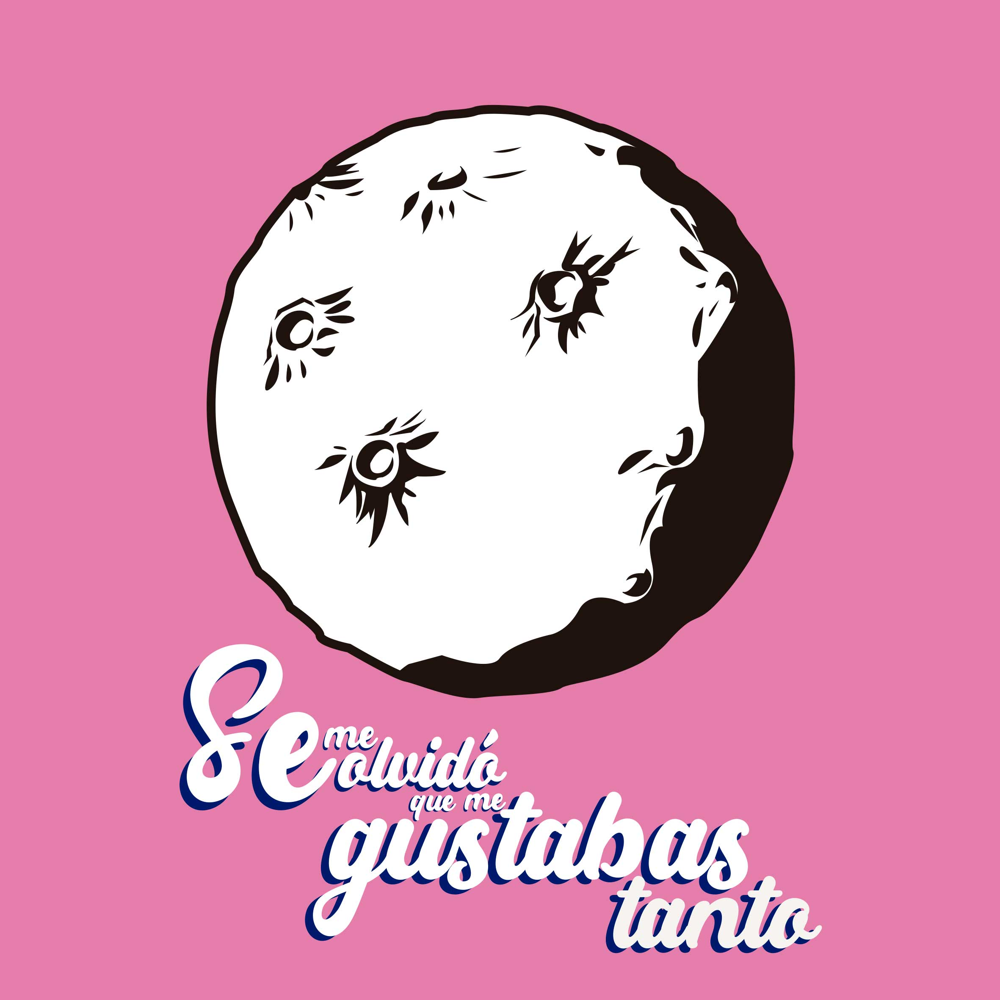
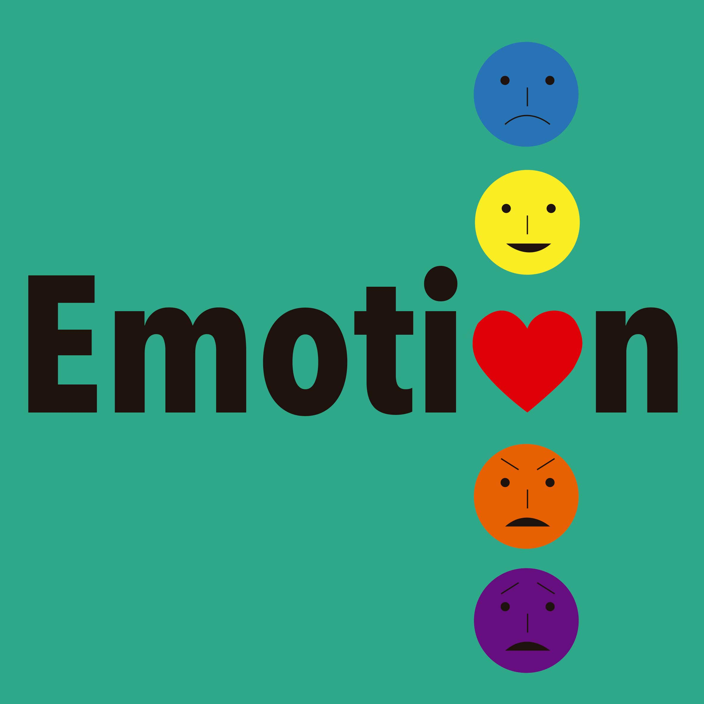

l Áreas de Interés
Soy una persona inteligente, influyente, familiar, reflexiva y lógica. Me desarrollo como Diseñador Gráfico en la Ciudad de Puebla. Me parece muy importante la cultura pop y el impacto que tiene en la sociedad actual, por ello busco incluir estos aspectos en mi trabajo. Me encuentro especializado en diseño editorial y más recientemente en Cartel, sin embargo, esto no me limita a explorar diferentes ámbitos de mi profesión como la ilustración, marca, empaque, etc. La clave en mi desarrollo profesional es el siempre buscar nuevas maneras de crecer, y siempre considerarme un principiante.
l Experiencia Profesional
- Colaboración con “KH40SS” en su proyecto Fuga Gruesa, en el año 2018
- Diseño de marca e identidad corporativa para “Punta Ceviche”, realizado en Agosto del 2019.
- Diseño de marca y de empaque para “TOBY TECH”, realizado en Agosto del 2020.
- Diseño de empaque para “Samadia organizadora de eventos”, realizado en enero del 2021.
- Proyecto académico, Diseño de señalización para el Jardín del Arte.
l Branding
Identidad corporativa
- Diseño de marca e identidad corporativa para “Punta Ceviche”, realizado en Agosto del 2019.
Diseño de empaque
- Empaque Diseñado para la empresa organizadora de eventos "Samadia", realizado en Abril de 2021.
l Diseño Editorial
Especialización
Cuento con una especialización de diseño editorial en la Benemérita Universidad Autónoma de Puebla.
 22.35.36.png)
 22.39.51.png) -Experimentación de artículo "Día de muertos", emulando a la revista Algarabía
-Experimentación de artículo "Día de muertos", emulando a la revista Algarabía
l Diseño de Cartel
Diseñar carteles es una de las partes que mas disfruto de mi trabajo como diseñador, a continuación se muestran algunas experimentaciones en este ámbito.
Experimentación
    l Ilustración
Experimentación
Mi método para realizar una ilustración es muy caótico, pienso que colocarme un formato establecido me limita creativamente. Solo me siento satisfecho con una ilustración cuando observo que es la representación mas fiel a su primera encarnación que surgió en mi mente.
  "El diseñador debe actuar como un director de orquesta, encargado de conjuntar distintos elementos y elevarlos a su máxima expresión sensorial"